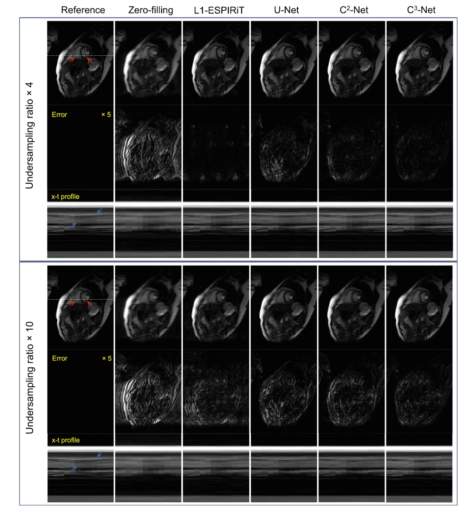

Projects
C3-net

[MICCAI-CMRxRecon'23] Cardiac magnetic resonance (CMR) plays an important role in clinically assessing cardiovascular diseases. However, CMR is inherently slow leading to patient discomfort and degraded image quality. Compared with parallel imaging (PI) and compressed sensing (CS), deep-learning-based methods have demonstrated superior image reconstruction performance, in terms of image quality and substantially reduced reconstruction times from highly undersampled CMR data. In this work, we proposed a novel complex-valued cascading cross-domain convolutional neural network, dubbed “C3-Net”, for improved image quality for accelerated CMR. C3-Net outperformed L1-ESPIRiT reconstruction, a baseline U-Net, and a real-valued cascading cross-domain CNN, especially with high acceleration factors (>8). The short-axis results from C3-Net showed reduced residual artifacts and improved temporal fidelity of cardiac motion. In long-axis results, C3-Net excelled in mitigating artifacts surrounding the heart wall and adipose regions in 2-chamber and 4-chamber views, while in a 3-chamber view all the listed methods resulted in suboptimal performance compared to the reference. The quantitative assessment indicated results consistent with assessment of the reconstructed images.